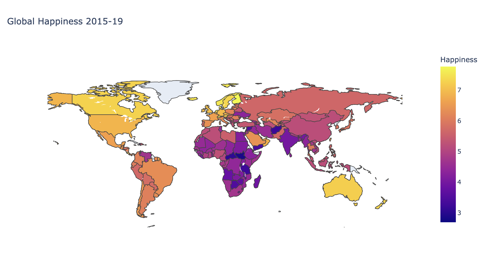
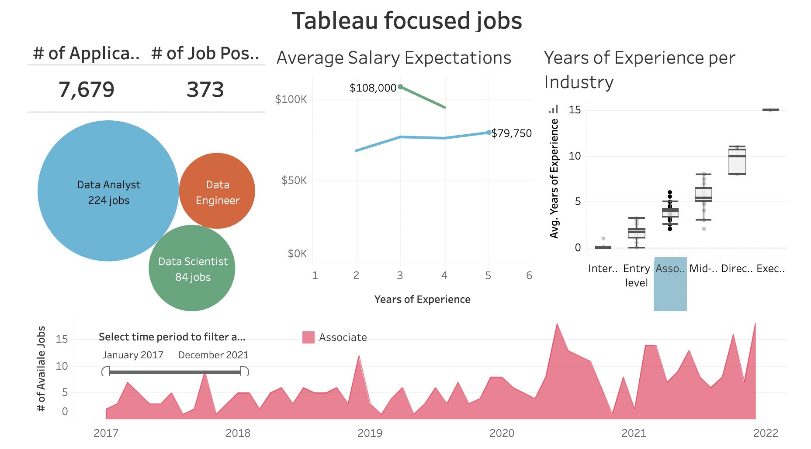

In this project, I create a deep learning model to classify ~3,800 images of skin lesions to detect cancer. I used different
techniques to address the class imbalance issue and improve the model's performance, such as weighted loss function, data augmentation,
transfer learning, and more. I was able to achieve an accuracy of 85.5% and an unweighted average recall of 76.55% on the validation dataset.


In this project, I solve some challenging big data processing tasks by playing around with big data tools (Hive, Spark RDDs, Spark SQL) and finding highly efficient solutions to three different types of real data:
Standard multi-attribute data (Bank data), Time series data (Twitter feed data), and Bag of words data.

The World Happiness Report rates happiness on 6 indicators: wealth, health, social support, freedom, generosity and perceptions of corruption. In this project, I merged 5 datasets (World Happiness Reports from 2015 to 2019) into one single Dataframe to perform exploratory data analysis, time series analysis,
and data visualisation. Some key findings include the happiest (and least happy) countries and regions, factors that have the most influence on happiness, and more.

In this project, I explore a job posting dataset to find out the demand for data scientists, data analysts, and data engineers. I used filters and calculated fields to build insightful visualisations of my findings, allowing for trend analysis. Finally, I brought it all together using Tableau's dashboard capabilities.

In this project, I write SQL code to extract insights from an event management system, such as underused venues and high-value event sponsors. I also created a view for easy data access, and wrote stored procedures, functions, and triggers for automation, taking into account data integrity issues. For example, I wrote a trigger to prevent duplicates.
In this project, I use SQL to extract data from a database consisting of 4 million records spread across 6 separate tables. I also performed some operations such as updating the title of an employee or promoting an employee to a higher level. Some SQL skills that I used include aggregate functions, CTEs, subqueries, and stored procedures.